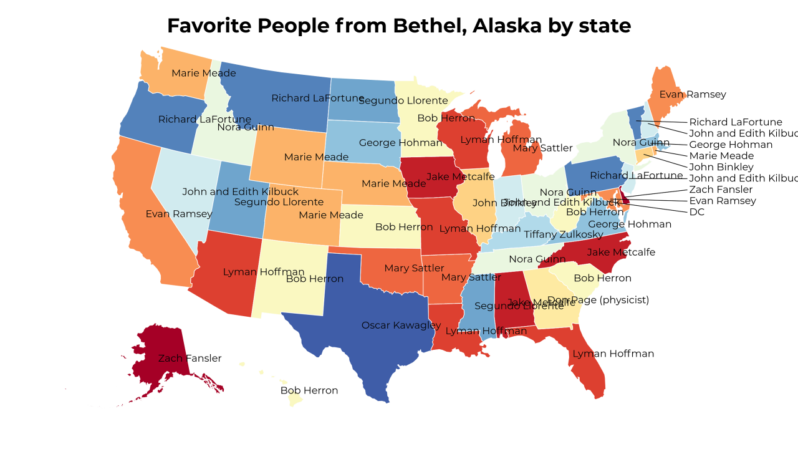
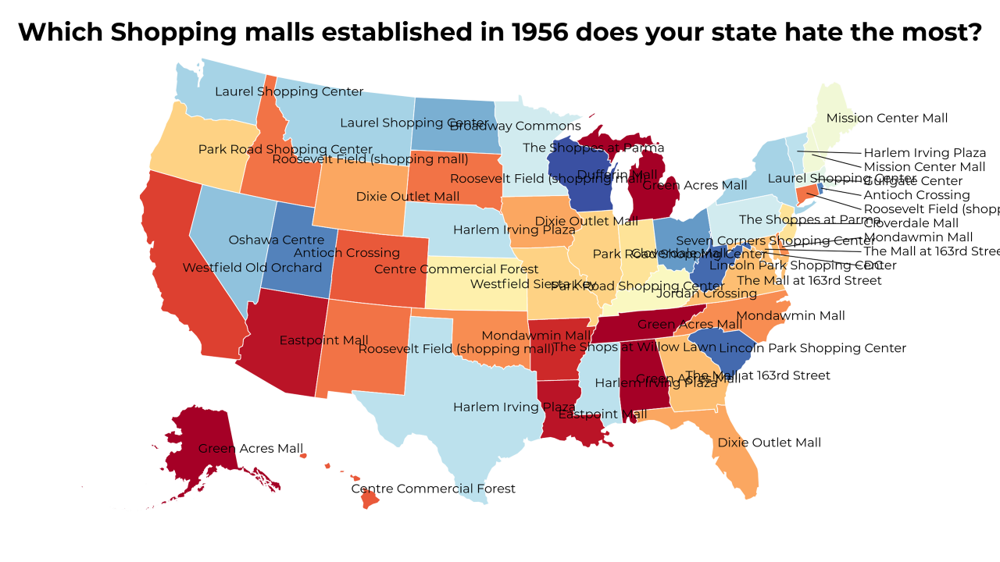
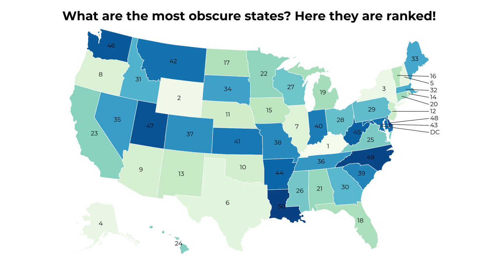
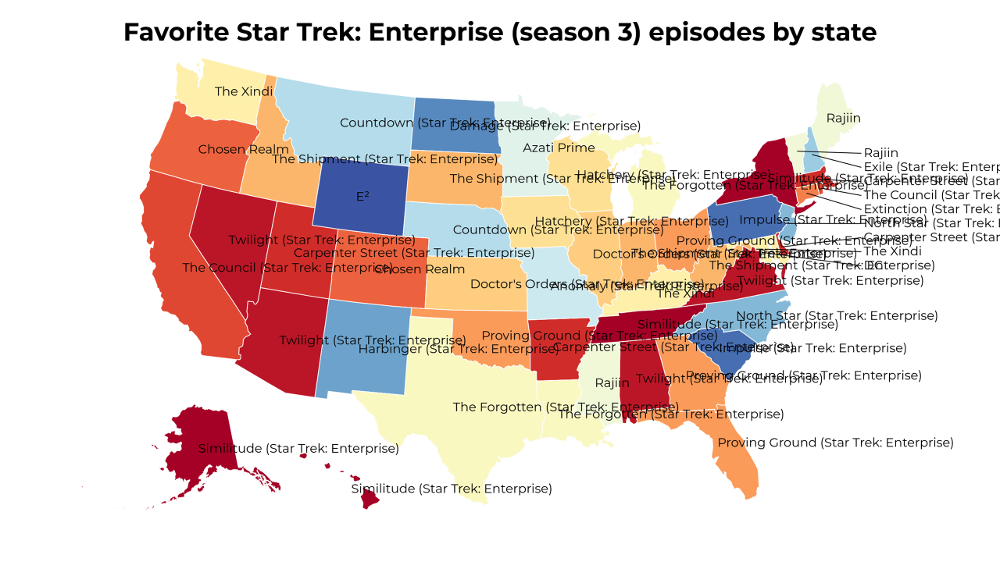
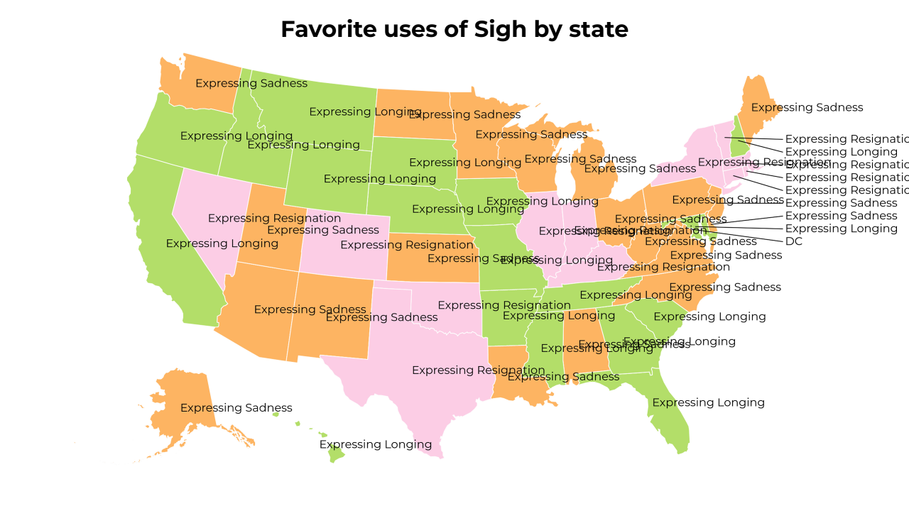

-
Favorite People from Bethel, Alaska by state
-
Which Shopping malls established in 1956 does your state hate the most?
-
 Which influences of Pierre Joseph Proudhon does your state hate the most?
Which influences of Pierre Joseph Proudhon does your state hate the most? -
What are the most obscure states? Here they are ranked!
-
Favorite Star Trek: Enterprise (season 3) episodes by state
-
 Which prerequisites of Snoring does your state hate the most?
Which prerequisites of Snoring does your state hate the most? -
Favorite uses of Sigh by state